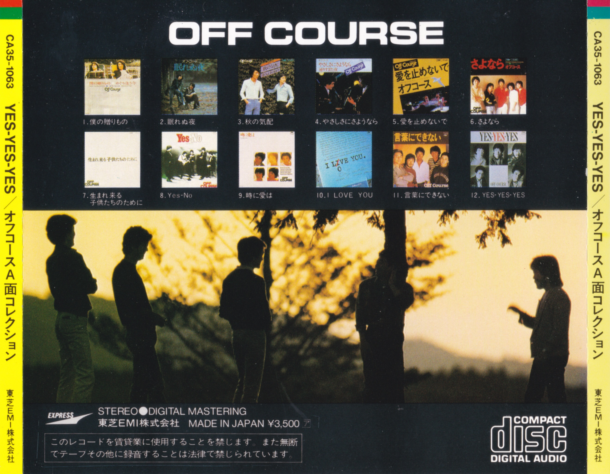
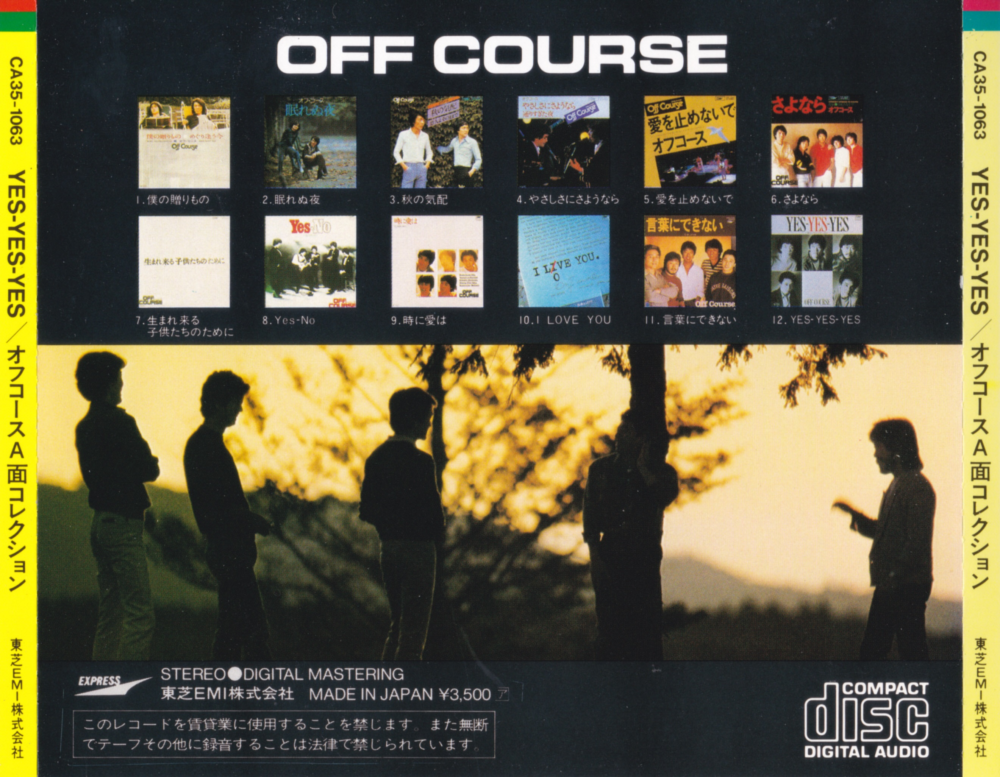

繝帙・繝縺ｫ謌ｻ繧・/a>
繧ｪ繝輔さ繝ｼ繧ｹ CA35繧ｷ繝ｪ繝ｼ繧ｺ
繧ｪ繝輔さ繝ｼ繧ｹ縺ｮ縲悟ヵ縺ｮ雍医ｊ繧ゅ・縲阪°繧峨君ext Sound
Track縲阪∪縺ｧ縺ｮ繧｢繝ｫ繝舌Β縺ｨ縲√郡election 1973-78縲阪郡election
1978-81縲阪刑es-Yes-Yes
繧ｪ繝輔さ繝ｼ繧ｹA髱｢繧ｳ繝ｬ繧ｯ繧ｷ繝ｧ繝ｳ縲阪・3譫壹・繝吶せ繝医い繝ｫ繝舌Β縺ｯ縲・982蟷ｴ11譛医°繧・984蟷ｴ2譛医∪縺ｧ縺ｮ髢薙↓CD蛹悶＆繧後※縺・∪縺吶・
縺薙ｌ繧峨・CD縺ｯ縲∵擲闃戲MI縺ｮExpress繝ｬ繝ｼ繝吶Ν縺九ｉ螳壻ｾ｡3500蜀・〒逋ｺ螢ｲ縺輔ｌ縲√き繧ｿ繝ｭ繧ｰ逡ｪ蜿ｷ縺ｯCA35縺ｧ蟋九∪繧翫∪縺吶・
螢ｲ繧瑚｡後″縺後≠縺ｾ繧願憶縺上↑縺九▲縺溘・縺九・985蟷ｴ9譛・8譌･縺ｫ螳壻ｾ｡3200蜀・→縺励※蜀榊ｺｦ逋ｺ螢ｲ縺輔ｌ縺ｾ縺励◆
(繧ｫ繧ｿ繝ｭ繧ｰ逡ｪ蜿ｷ縺ｯCA32縺ｧ蟋九∪繧・縲・
CA35縺ｧ蟋九∪繧区怙蛻昴・CD縺ｯ縲・蟷ｴ蜊顔ｨ句ｺｦ縺ｧ蟒・乢縺ｨ縺ｪ縺｣縺溘・縺ｧ縲∫樟蝨ｨ縺ｧ縺ｯ髱槫ｸｸ縺ｫ蜈･謇九′蝗ｰ髮｣縺ｫ縺ｪ縺｣縺ｦ縺・∪縺吶・
繧｢繝ｼ繧ｫ繧､繝悶・諢丞袖繧ょ・縺ｭ縺ｦ縲∬・蛻・′謖√▲縺ｦ縺・ｋ繧ゅ・繧堤ｴｹ莉九＠縺ｾ縺・
(逋ｺ螢ｲ譌･縺ｯ莠域Φ繧貞性縺ｿ縺ｾ縺・縲・/p>
I Love You (CA35-1002)
- 10th繧｢繝ｫ繝舌Β
- 逋ｺ螢ｲ譌･: 1982蟷ｴ11譛・譌･
- 謇謖∝刀:
- 繝槭ヨ繝ｪ繧ｯ繧ｹ: CA35-1002 61A4 (Neat font)
- 蛻ｻ蜊ｰ: CSR Compact Disc (3x)
- 蛯呵・
3譫壽園謖√＠縺ｦ縺・∪縺吶′縲√＞縺壹ｌ繧ゆｸ願ｨ倥・繝槭ヨ繝ｪ繧ｯ繧ｹ縺ｨ蛻ｻ蜊ｰ縺ｧ縺吶・縺ｧ縲√％縺ｮ繝舌・繧ｸ繝ｧ繝ｳ縺梧怙繧よ勸蜿翫＠縺ｦ縺・◎縺・〒縺吶・
逋ｺ螢ｲ譎よ悄縺ｯ1983蟷ｴ遘矩・→莠域Φ縺励※縺・∪縺吶・CSR Compact
Disc蛻ｻ蜊ｰ縺ｯ縲・983蟷ｴ遘九°繧・985蟷ｴ譏･鬆・∪縺ｧ縺ｮCD縺ｫ縺ｿ繧峨ｌ縺ｾ縺吶・
繝槭ヨ繝ｪ繧ｯ繧ｹ縲警xAx縲阪→CSR Compact
Disc蛻ｻ蜊ｰ縺ｮ邨・∩蜷医ｏ縺帙・縲・983蟷ｴ10譛育匱螢ｲ縺ｮ縲後％縺ｮ驕薙ｒ繧・￠縺ｰ縲・CA35-1033)縲・983蟷ｴ11譛育匱螢ｲ縺ｮ縲繰unktion縲・CA35-1042)
縺ｪ縺ｩ縺ｧ縺ｿ繧峨ｌ繧九・縺ｧ縲・983蟷ｴ遘矩・°繧臥匳蝣ｴ縺励◆縺ｮ縺ｧ縺ｯ縺ｪ縺・°縺ｨ諤昴＞縺ｾ縺吶・
1982蟷ｴ11譛医↓逋ｺ螢ｲ縺輔ｌ縺滓怙蛻昴・繝励Ξ繧ｹ縺ｯ縲√・繝医Μ繧ｯ繧ｹ縺靴A35-1002-1
1D1繧ГA35-1002-1 1D2 (Crude font)縲√◎縺励※CBS/Sony蛻ｻ蜊ｰ (Manufactured By
CBS/Sony Records Inc.) 縺悟・縺｣縺ｦ縺・∪縺吶・
莉悶・CA35逶､縺ｨ豈斐∋縺ｦ繧ゅ・浹蝨ｧ縺後ｂ縺ｮ縺吶＃縺丈ｽ弱＞縺ｧ縺吶・
髻ｳ蝨ｧ縺御ｸ翫￡繧峨ｌ縺ｦ縺・ｋCA32逶､ (CA32-1167) 縺ｮ譁ｹ縺瑚・縺阪ｄ縺吶＞縺ｧ縺吶・/li>
- 蜈･謇九・縺励ｄ縺吶＆:
螟ｧ繝偵ャ繝医＠縺滉ｽ懷刀縺ｪ縺ｮ縺ｧ縲√・繝医Μ繧ｯ繧ｹ繧・綾蜊ｰ縺ｫ縺薙□繧上ｉ縺ｪ縺代ｌ縺ｰ縲∵ｯ碑ｼ・噪螳ｹ譏薙↓蜈･謇九〒縺阪∪縺吶・/li>


Selection 1973-78 (CA35-1006)
- 繝吶せ繝医い繝ｫ繝舌Β
- 逋ｺ螢ｲ譌･: 1983蟷ｴ?譛・/li>
- 謇謖∝刀 (CBS/Sony繝励Ξ繧ｹ):
- 繝槭ヨ繝ｪ繧ｯ繧ｹ: CA35-1006-1 1A1 (Neat font)
- 蛻ｻ蜊ｰ: Manufactured By CBS/Sony Records Inc.
- 謇謖∝刀 (譚ｱ闃戲MI繝励Ξ繧ｹ):
- 繝槭ヨ繝ｪ繧ｯ繧ｹ: CA35-1006-1 1B1 (Big stamped font)
- 蛻ｻ蜊ｰ: 縺ｪ縺・/li>
- 蛯呵・
2譫壽園謖√＠縺ｦ縺翫ｊ縲・譫壹・CBS/Sony繝励Ξ繧ｹ縲√ｂ縺・譫壹・譚ｱ闃戲MI繝励Ξ繧ｹ縺ｧ縺吶・
蜑崎・・1st繝励Ξ繧ｹ縲∝ｾ瑚・・2nd繧・rd繝励Ξ繧ｹ縺縺ｨ諤昴＞縺ｾ縺吶・
1st繝励Ξ繧ｹ縺ｮ逋ｺ螢ｲ譌･縺ｯ荳肴・縺ｧ縺吶′縲∝ｯｺ蟆ｾ閨ｰ縲軍eflections縲阪・蛻戮D蛹・(CA35-1003)
縺・983蟷ｴ2譛・1譌･縲√い繝ｪ繧ｹ縲後・繧ｹ繝・0縲・CA35-1008)
縺・983蟷ｴ5譛・1譌･逋ｺ螢ｲ縺ｪ縺ｮ縺ｧ縲√◎縺ｮ髢薙・縺ｩ縺薙°縺ｧ縺吶・
繧｢繝ｪ繧ｹ縲後・繧ｹ繝・0縲阪・繝槭ヨ繝ｪ繧ｯ繧ｹ縺ｯCA35-1008-4 1A1縺ｧ縲，BS/Sony蛻ｻ蜊ｰ
(Manufactured By CBS/Sony Records Inc.) 縺悟・縺｣縺ｦ縺翫ｊ縲√郡election
1973-78縲阪・CBS/Sony繝励Ξ繧ｹ縺ｨ蜷後§繝代ち繝ｼ繝ｳ縺ｧ縺吶・縺ｧ縲，BS/Sony繝励Ξ繧ｹ縺ｮ逋ｺ螢ｲ譌･縺ｯ縲後・繧ｹ繝・0縲阪→蜷後§縺・983蟷ｴ5譛・1譌･縺ｪ縺ｮ縺ｧ縺ｯ縺ｪ縺・°縺ｨ諤昴＞縺ｾ縺吶・
譚ｱ闃戲MI繝励Ξ繧ｹ縺ｧ縺ｯ縲√・繝医Μ繧ｯ繧ｹ縺ｮ驛ｨ蛻・↓迚ｹ蠕ｴ逧・↑蟷・ｺ・＞繝輔か繝ｳ繝・(Big stamped
font) 縺御ｽｿ逕ｨ縺輔ｌ縺ｦ縺・∪縺吶・
縺薙・繝輔か繝ｳ繝医・縲∵擲闃戲MI縺ｮ蟾･蝣ｴ縺ｧ1983蟷ｴ縺ｫ陬ｽ騾縺輔ｌ縺櫃D縺ｫ縺励°菴ｿ繧上ｌ縺ｦ縺・↑縺・◎縺・〒縺吶・
螳滄圀縺ｫ縲・983蟷ｴ11譛育匱螢ｲ縺ｮ驤ｴ譛ｨ蠎ｷ蜊壹後す繝ｳ繧ｷ繧｢繝ｪ繝ｼ縲・CA35-1043)
繧・聞貂募央縲粂eavy Gauge縲・CA35-1044)
縺ｧ縺ｿ縺九￠繧九ｈ縺・↓縺ｪ繧翫・984蟷ｴ3譛育匱螢ｲ縺ｮ繝√Η繝ｼ繝ｪ繝・・縲栗 Dream縲・CA35-1070)
縺ゅ◆繧翫ｒ譛蠕後↓騾皮ｵｶ縺医∪縺吶・
譚ｱ闃戲MI繝励Ξ繧ｹ縺ｮ逋ｺ螢ｲ譎よ悄縺ｯ1983蟷ｴ11譛医°繧・984蟷ｴ3譛磯・□縺ｨ諤昴＞縺ｾ縺吶・
繝励Μ繧ｨ繝ｳ繝輔ぃ繧ｷ繧ｹ縺梧寺縺九▲縺ｦ縺・※縲・ｫ倬浹驛ｨ縺悟ｼｷ隱ｿ縺輔ｌ縺ｦ縺・ｋ繧医≧縺ｫ諢溘§縺ｾ縺・
(繧ゅ＠縺九＠縺溘ｉ驕輔≧縺九ｂ縺励ｌ縺ｾ縺帙ｓ)縲・/li>
- 蜈･謇九・縺励ｄ縺吶＆: 繝､繝輔が繧ｯ縺ｧ縺ｮ逶ｮ謦・ｻ蠎ｦ縺ｯ縲郡election
1978-81縲阪ｄ縲刑es-Yes-Yes縲阪→縺・▲縺滉ｻ悶・繝吶せ繝医い繝ｫ繝舌Β繧医ｊ縺ｯ菴弱＞縺ｮ縺ｧ縺吶′縲∝・謇九・縺昴％縺ｾ縺ｧ蝗ｰ髮｣縺ｧ縺ｯ縺ゅｊ縺ｾ縺帙ｓ縲・
繧ｪ繝輔さ繝ｼ繧ｹ縺ｮ菴懷刀縺御ｸ謖吶↓CD蛹悶＆繧後◆縺ｨ縺阪√ｄ縺ｯ繧翫・繧ｹ繝医い繝ｫ繝舌Β繧帝∈謚槭＠縺滉ｺｺ縺悟､壹°縺｣縺溘・縺縺ｨ諤昴＞縺ｾ縺吶・
CBS/Sony繝励Ξ繧ｹ縺ｧ縺ｯ縲√ず繝｣繧ｱ繝・ヨ縺ｮ陬城擇縺ｫ隱､讀阪′縺ゅｊ縲√檎ｧ九・豌鈴・縲阪′縲檎ｧ九・蟷ｴ驟阪阪↓縺ｪ縺｣縺ｦ縺・∪縺・
(荳逡ｪ荳九・逕ｻ蜒上ｒ蜿ら・)縲・/strong>
隱､讀阪′縺ゅｋ縺溘ａ縲，BS/Sony繝励Ξ繧ｹ縺ｯ繝ｬ繧｢縺ｪ蜩√〒縺吶・/li>

Selection 1978-81 (CA35-1007)
- 繝吶せ繝医い繝ｫ繝舌Β
- 逋ｺ螢ｲ譌･: 1983蟷ｴ?譛・/li>
- 謇謖∝刀:
- 繝槭ヨ繝ｪ繧ｯ繧ｹ: CA35-1007 11A2 (Neat font)
- 蛻ｻ蜊ｰ: CSR Compact Disc (3x)
- 蛯呵・ 1譫壽園謖√＠縺ｦ縺翫ｊ縲√・繝医Μ繧ｯ繧ｹ縺ｨ蛻ｻ蜊ｰ縺ｯ荳願ｨ倥・騾壹ｊ縺ｧ縺吶・
逋ｺ螢ｲ譎よ悄縺ｯ1983蟷ｴ遘矩・→莠域Φ縺励※縺・∪縺吶・諱舌ｉ縺乗怙蛻昴・繝励Ξ繧ｹ縺ｯ縲√郡election
1973-78縲阪→蜷後§繧医≧縺ｪ繝槭ヨ繝ｪ繧ｯ繧ｹ (CA35-1007-x xAx)
縺ｧ縲，BS/Sony蛻ｻ蜊ｰ縺悟・縺｣縺ｦ縺・ｋ縺ｨ諤昴＞縺ｾ縺吶・
縺ｾ縺溘Γ繝ｫ繧ｫ繝ｪ縺ｧ縲∵擲闃戲MI繝励Ξ繧ｹ繧ゅ∩縺溘％縺ｨ縺後≠繧翫∪縺・
(雉ｼ蜈･縺ｯ縺励∪縺帙ｓ縺ｧ縺励◆)縲・
1st繝励Ξ繧ｹ縺ｮ逋ｺ螢ｲ譌･縺ｯ荳肴・縺ｧ縺吶′縲∝ｯｺ蟆ｾ閨ｰ縲軍eflections縲阪・蛻戮D蛹・(CA35-1003)
縺・983蟷ｴ2譛・1譌･縲√い繝ｪ繧ｹ縲後・繧ｹ繝・0縲・CA35-1008)
縺・983蟷ｴ5譛・1譌･逋ｺ螢ｲ縺ｪ縺ｮ縺ｧ縲√◎縺ｮ髢薙・縺ｩ縺薙°縺ｧ縺吶・
繝励Μ繧ｨ繝ｳ繝輔ぃ繧ｷ繧ｹ縺梧寺縺九▲縺ｦ縺・※縲・ｫ倬浹驛ｨ縺悟ｼｷ隱ｿ縺輔ｌ縺ｦ縺・ｋ繧医≧縺ｫ諢溘§縺ｾ縺・
(繧ゅ＠縺九＠縺溘ｉ驕輔≧縺九ｂ縺励ｌ縺ｾ縺帙ｓ)縲・/li>
- 蜈･謇九・縺励ｄ縺吶＆: 繝､繝輔が繧ｯ縺ｧ縺ｯ繧医￥縺ｿ縺九￠縺ｾ縺吶・
CA35繧ｷ繝ｪ繝ｼ繧ｺ縺ｮ縺ｪ縺九〒譛繧ょ・謇九′螳ｹ譏薙□縺ｨ諤昴＞縺ｾ縺吶・
縲後＆繧医↑繧峨阪刑es-No縲阪栗 Love
You縲阪↑縺ｩ縺ｮ繝偵ャ繝医す繝ｳ繧ｰ繝ｫ繧貞庶骭ｲ縺励※縺・ｋ縺溘ａ縲，D鮟取・譛溘〒縺ゅｋ縺ｫ繧ゅ°縺九ｏ繧峨★縲√ｈ縺丞｣ｲ繧後◆縺ｮ縺縺ｨ諤昴＞縺ｾ縺吶・/li>


Only Just
Begun -Off Course Instruments (CA35-1014)
- 髱槫・蠑上う繝ｳ繧ｹ繝医ぇ繝ｫ繝｡繝ｳ繧ｿ繝ｫ繧｢繝ｫ繝舌Β (隨ｬ荳蠑ｾ)
- 逋ｺ螢ｲ譌･: 1983蟷ｴ7譛・1譌･
- 蛯呵・ 譛ｪ謇謖・/li>
- 蜈･謇九・縺励ｄ縺吶＆:
縺斐￥遞縺ｫ繝､繝輔が繧ｯ縺ｧ縺ｿ縺九￠縺ｾ縺吶′縲・ｫ倬｡阪↑縺ｮ縺ｧ謇九′蜃ｺ縺帙∪縺帙ｓ縲・/li>
We Are (CA35-1015)
- 8th繧｢繝ｫ繝舌Β
- 逋ｺ螢ｲ譌･: 1983蟷ｴ7譛・1譌･
- 謇謖∝刀:
- 繝槭ヨ繝ｪ繧ｯ繧ｹ: CA35-1015 11 (Neat font)
- 蛻ｻ蜊ｰ: Manufactured By CBS/Sony Records Inc.
- 蛯呵・ 1譫壽園謖√＠縺ｦ縺翫ｊ縲√・繝医Μ繧ｯ繧ｹ縺ｨ蛻ｻ蜊ｰ縺ｯ荳願ｨ倥・騾壹ｊ縺ｧ縺吶・
1983蟷ｴ7譛育匱螢ｲ縺ｮ1st繝励Ξ繧ｹ縺縺ｨ諤昴＞縺ｾ縺吶・/li>
- 蜈･謇九・縺励ｄ縺吶＆: 螟ｧ繝偵ャ繝医＠縺滉ｽ懷刀縺ｪ縺ｮ縺ｧ縲∵ｯ碑ｼ・噪蜈･謇九′螳ｹ譏薙〒縺吶・/li>


Over (CA35-1021)
- 9th繧｢繝ｫ繝舌Β
- 逋ｺ螢ｲ譌･: 1983蟷ｴ9譛・譌･
- 謇謖∝刀 (CBS/Sony繝励Ξ繧ｹ):
- 繝槭ヨ繝ｪ繧ｯ繧ｹ: CA35-1021 11 (Neat font)
- 蛻ｻ蜊ｰ: Manufactured By CBS/Sony Records Inc.
- 謇謖∝刀 (譚ｱ闃戲MI繝励Ξ繧ｹ):
- 繝槭ヨ繝ｪ繧ｯ繧ｹ: CA35-1021 1B1 (Neat font)
- 蛻ｻ蜊ｰ: 縺ｪ縺・/li>
- 蛯呵・
2譫壽園謖√＠縺ｦ縺翫ｊ縲・譫壹・CBS/Sony繝励Ξ繧ｹ縲√ｂ縺・譫壹・譚ｱ闃戲MI繝励Ξ繧ｹ縺ｧ縺吶・
蜑崎・・1983蟷ｴ9譛育匱螢ｲ縺ｮ1st繝励Ξ繧ｹ縺縺ｨ諤昴＞縺ｾ縺吶・繝槭ヨ繝ｪ繧ｯ繧ｹ縲警Ax縲阪警Bx縲・
(萓九∴縺ｰ1A1縲・B2縲・B1縺ｪ縺ｩ)
縺ｯ1984蟷ｴ螟丈ｻ･髯阪・CD縺ｫ繧医￥縺ｿ繧峨ｌ繧九・縺ｧ縲∵擲闃戲MI繝励Ξ繧ｹ縺ｮ逋ｺ螢ｲ譎よ悄縺ｯ1984蟷ｴ螟丈ｻ･髯阪□縺ｨ諤昴＞縺ｾ縺吶・/li>
- 蜈･謇九・縺励ｄ縺吶＆:
螟ｧ繝偵ャ繝医＠縺滉ｽ懷刀縺ｪ縺ｮ縺ｧ縲∫ｵ先ｧ九↑鬆ｻ蠎ｦ縺ｧ繝､繝輔が繧ｯ縺ｫ逋ｻ蝣ｴ縺励∪縺吶・縲栗 Love
You縲阪係e
Are縲阪薫ver縲阪→縲√ヲ繝・ヨ菴懊°繧蛾・分縺ｫCD蛹悶＠縺ｦ縺・▲縺溘・縺縺ｨ諤昴＞縺ｾ縺吶・/li>


From Me To
You -Off Course Instruments II (CA35-1025)
- 髱槫・蠑上う繝ｳ繧ｹ繝医ぇ繝ｫ繝｡繝ｳ繧ｿ繝ｫ繧｢繝ｫ繝舌Β (隨ｬ莠悟ｼｾ)
- 逋ｺ螢ｲ譌･: 1983蟷ｴ9譛・譌･
- 蛯呵・ 譛ｪ謇謖・/li>
- 蜈･謇九・縺励ｄ縺吶＆:
縺斐￥遞縺ｫ繝､繝輔が繧ｯ縺ｧ縺ｿ縺九￠縺ｾ縺吶′縲・ｫ倬｡阪↑縺ｮ縺ｧ謇九′蜃ｺ縺帙∪縺帙ｓ縲・/li>
繝ｯ繧､繝ｳ縺ｮ蛹ゅ＞ (CA35-1032)
- 3rd繧｢繝ｫ繝舌Β
- 逋ｺ螢ｲ譌･: 1983蟷ｴ10譛・1譌･
- 謇謖∝刀 (CBS/Sony繝励Ξ繧ｹ):
- 繝槭ヨ繝ｪ繧ｯ繧ｹ: CA35-1032 11 (Neat font)
- 蛻ｻ蜊ｰ: CSR Compact Disc (3x)
- 蛯呵・ 1譫壽園謖√＠縺ｦ縺翫ｊ縲√・繝医Μ繧ｯ繧ｹ縺ｨ蛻ｻ蜊ｰ縺ｯ荳願ｨ倥・騾壹ｊ縺ｧ縺吶・
1983蟷ｴ10譛育匱螢ｲ縺ｮ1st繝励Ξ繧ｹ縺縺ｨ諤昴＞縺ｾ縺吶・CA32逶､ (CA32-1158)
縺ｨ縺ｯ髻ｳ蝨ｧ縺瑚凶蟷ｲ逡ｰ縺ｪ縺｣縺ｦ縺・ｋ繧医≧縺ｧ縺吶・/li>
- 蜈･謇九・縺励ｄ縺吶＆:
蛻晄悄縺ｮ70蟷ｴ莉｣縺ｮ菴懷刀縺ｯ縲∝・謇九・髮｣譏灘ｺｦ縺御ｸ豌励↓荳翫′繧翫∪縺吶・
螳壻ｾ｡繧剃ｸ雁屓繧句､谿ｵ縺ｧ蜈･謇九＠縺ｾ縺励◆縲・
蛻晄悄縺ｮ蛯台ｽ懊↑縺ｮ縺ｧ縲∽ｾ｡蛟､縺ｯ蜊∝・縺ｫ縺ゅｋ縺ｨ諤昴＞縺ｾ縺吶・/li>


縺薙・驕薙ｒ繧・￠縺ｰ /
繧ｪ繝輔・繧ｳ繝ｼ繧ｹ繝ｻ繝ｩ繧ｦ繝ｳ繝・ (CA35-1033)
- 2nd繧｢繝ｫ繝舌Β
- 逋ｺ螢ｲ譌･: 1983蟷ｴ10譛・1譌･
- 謇謖∝刀 (CBS/Sony繝励Ξ繧ｹ):
- 繝槭ヨ繝ｪ繧ｯ繧ｹ: CA35-1033 31A1 (Neat font)
- 蛻ｻ蜊ｰ: CSR Compact Disc (3x)
- 蛯呵・
3譫壽園謖√＠縺ｦ縺・∪縺吶′縲√＞縺壹ｌ繧ゆｸ願ｨ倥・繝槭ヨ繝ｪ繧ｯ繧ｹ縺ｨ蛻ｻ蜊ｰ縺ｧ縺吶・縺ｧ縲√％縺ｮ繝舌・繧ｸ繝ｧ繝ｳ縺梧怙繧よ勸蜿翫＠縺ｦ縺・◎縺・〒縺吶・
1983蟷ｴ10譛育匱螢ｲ縺ｮ1st繝励Ξ繧ｹ縺縺ｨ諤昴＞縺ｾ縺吶・
蛟倶ｺｺ逧・↓縺ｯ縲√が繝輔さ繝ｼ繧ｹ縺ｮ譛鬮伜ｑ菴懊〒縺吶・
繧ｳ繝ｼ繝ｩ繧ｹ繧よｼ泌･上ｂ蜈ｨ縺ｦ縺瑚憶縺・〒縺吶・/li>
- 蜈･謇九・縺励ｄ縺吶＆:
蛻晄悄縺ｮ70蟷ｴ莉｣縺ｮ菴懷刀縺ｯ縲∝・謇九・髮｣譏灘ｺｦ縺御ｸ豌励↓荳翫′繧翫∪縺吶・
鬧ｿ豐ｳ螻九ｄ繝､繝輔が繧ｯ縺ｧ縺溘∪縺ｫ縺ｿ縺九￠繧九・縺ｧ縲∝・謇九・荳榊庄閭ｽ縺ｧ縺ｯ縺ｪ縺輔◎縺・〒縺吶・/li>


Made In Love
-Off Course Instruments III (CA35-1034)
- 髱槫・蠑上う繝ｳ繧ｹ繝医ぇ繝ｫ繝｡繝ｳ繧ｿ繝ｫ繧｢繝ｫ繝舌Β (隨ｬ荳牙ｼｾ)
- 逋ｺ螢ｲ譌･: 1983蟷ｴ10譛・1譌･
- 蛯呵・ 譛ｪ謇謖・/li>
- 蜈･謇九・縺励ｄ縺吶＆:
縺斐￥遞縺ｫ繝､繝輔が繧ｯ縺ｧ縺ｿ縺九￠縺ｾ縺吶′縲・ｫ倬｡阪↑縺ｮ縺ｧ謇九′蜃ｺ縺帙∪縺帙ｓ縲・/li>
蜒輔・雍医ｊ繧ゅ・ (CA35-1040)
- 1st繧｢繝ｫ繝舌Β
- 逋ｺ螢ｲ譌･: 1983蟷ｴ11譛・1譌･
- 謇謖∝刀 (CBS/Sony繝励Ξ繧ｹ):
- 繝槭ヨ繝ｪ繧ｯ繧ｹ: CA35-1040 11 (Neat font)
- 蛻ｻ蜊ｰ: CSR Compact Disc (3x)
- 蛯呵・
2譫壽園謖√＠縺ｦ縺翫ｊ縲√＞縺壹ｌ繧ゆｸ願ｨ倥・繝槭ヨ繝ｪ繧ｯ繧ｹ縺ｨ蛻ｻ蜊ｰ縺ｧ縺吶・縺ｧ縲√％縺ｮ繝舌・繧ｸ繝ｧ繝ｳ縺梧怙繧よ勸蜿翫＠縺ｦ縺・◎縺・〒縺吶・
1983蟷ｴ11譛育匱螢ｲ縺ｮ1st繝励Ξ繧ｹ縺縺ｨ諤昴＞縺ｾ縺吶・CA32逶､ (CA32-1156)
縺ｨ髻ｳ貅舌・蜈ｨ縺丞酔荳縺ｧ縺吶・/li>
- 蜈･謇九・縺励ｄ縺吶＆:
蛻晄悄縺ｮ70蟷ｴ莉｣縺ｮ菴懷刀縺ｯ縲∝・謇九・髮｣譏灘ｺｦ縺御ｸ豌励↓荳翫′繧翫∪縺吶・
縺昴・縺ｪ縺九〒繧ゅ√悟ヵ縺ｮ雍医ｊ繧ゅ・縲阪・譛ｬ蠖薙↓髮｣迚ｩ縺ｧ縺吶・
萓｡蛟､縺後≠繧九ｂ縺ｮ縺ｧ縺吶・縺ｧ縲∵園謖√＆繧後※縺・ｋ譁ｹ縺ｯ縺ｩ縺・°蜃ｦ蛻・＠縺ｪ縺・〒縲∽ｸｭ蜿､螻九↓螢ｲ縺｣縺ｦ縺上□縺輔＞縲・
蜊翫・隲ｦ繧√※縺・◆縺ｮ縺ｧ縲∫匱隕九＠縺溘→縺阪・蠢・∮縺梧ｭ｢縺ｾ繧九°縺ｨ諤昴＞縺ｾ縺励◆縲・
蜈･謇九〒縺阪◆縺ｮ縺ｯ驕九′濶ｯ縺九▲縺溘〒縺吶・/li>


Song Is Love (CA35-1041)
- 4th繧｢繝ｫ繝舌Β
- 逋ｺ螢ｲ譌･: 1983蟷ｴ11譛・1譌･
- 謇謖∝刀 (CBS/Sony繝励Ξ繧ｹ):
- 繝槭ヨ繝ｪ繧ｯ繧ｹ: CA35-1041 11 (Neat font)
- 蛻ｻ蜊ｰ: CSR Compact Disc (3x)
- 蛯呵・ 1譫壽園謖√＠縺ｦ縺翫ｊ縲√・繝医Μ繧ｯ繧ｹ縺ｨ蛻ｻ蜊ｰ縺ｯ荳願ｨ倥・騾壹ｊ縺ｧ縺吶・
1983蟷ｴ11譛育匱螢ｲ縺ｮ1st繝励Ξ繧ｹ縺縺ｨ諤昴＞縺ｾ縺吶・縺薙■繧峨ｂ蜷咲乢縺縺ｨ諤昴＞縺ｾ縺吶・
迚ｹ縺ｫ蠕悟濠縺ｧ縺吶′縲・｢ｨ縺後せ繝・→騾壹ｊ謚懊￠繧九ｈ縺・↓繧ｯ繝ｼ繝ｫ縺ｪ驤ｴ譛ｨ蠎ｷ蜊壹・譖ｲ縺ｨ縲∵─諠・↓險ｴ縺医°縺代※縺上ｋ蟆冗伐蜥梧ｭ｣縺ｮ譖ｲ縺御ｺ､莠偵↓荳ｦ繧薙〒縺・∪縺吶・
縺昴・繝舌Λ繝ｳ繧ｹ縺碁撼蟶ｸ縺ｫ濶ｯ縺上・莠ｺ邨・・繧ｪ繝輔さ繝ｼ繧ｹ縺ｮ濶ｯ縺輔′譛繧ら樟繧後※縺・ｋ縺ｮ縺ｧ縺ｯ縺ｪ縺・°縺ｨ諤昴＞縺ｾ縺吶・
縲後・縺ｨ繧翫〒逕溘″縺ｦ繧・￠繧後・縲阪碁搨譏･縲阪↑縺ｩ縺ｯ縲√が繝輔さ繝ｼ繧ｹ螻域欠縺ｮ蜷肴峇縺ｧ縺吶・
縲碁搨遨ｺ縺ｨ莠ｺ逕溘→縲阪悟・縺梧擂繧九∪縺医↓縲阪梧ｭ後ｒ謐ｧ縺偵※縲阪・諢溷虚繧ゅ・縺ｧ縺吶・/li>
- 蜈･謇九・縺励ｄ縺吶＆:
蛻晄悄縺ｮ70蟷ｴ莉｣縺ｮ菴懷刀縺ｯ縲∝・謇九・髮｣譏灘ｺｦ縺御ｸ豌励↓荳翫′繧翫∪縺吶・
繝､繝輔が繧ｯ縺ｧ縺溘∪縺ｫ縺ｿ縺九￠繧九・縺ｧ縲∝・謇九・荳榊庄閭ｽ縺ｧ縺ｯ縺ｪ縺輔◎縺・〒縺吶・/li>


Junktion (CA35-1042)
- 5th繧｢繝ｫ繝舌Β
- 逋ｺ螢ｲ譌･: 1983蟷ｴ11譛・1譌･
- 謇謖∝刀 (CBS/Sony繝励Ξ繧ｹ):
- 繝槭ヨ繝ｪ繧ｯ繧ｹ: CA35-1042 11A1 (Neat font)
- 蛻ｻ蜊ｰ: CSR Compact Disc (3x)
- 蛯呵・ 1譫壽園謖√＠縺ｦ縺翫ｊ縲√・繝医Μ繧ｯ繧ｹ縺ｨ蛻ｻ蜊ｰ縺ｯ荳願ｨ倥・騾壹ｊ縺ｧ縺吶・
1983蟷ｴ11譛育匱螢ｲ縺ｮ1st繝励Ξ繧ｹ縺縺ｨ諤昴＞縺ｾ縺吶・/li>
- 蜈･謇九・縺励ｄ縺吶＆:
蛻晄悄縺ｮ70蟷ｴ莉｣縺ｮ菴懷刀縺ｯ縲∝・謇九・髮｣譏灘ｺｦ縺御ｸ豌励↓荳翫′繧翫∪縺吶・
鬧ｿ豐ｳ螻九ｄ繝､繝輔が繧ｯ縺ｧ縺溘∪縺ｫ縺ｿ縺九￠繧九・縺ｧ縲∝・謇九・荳榊庄閭ｽ縺ｧ縺ｯ縺ｪ縺輔◎縺・〒縺吶・/li>


Sincerely (CA35-1043)
- 驤ｴ譛ｨ蠎ｷ蜊・st繧ｽ繝ｭ繧｢繝ｫ繝舌Β
- 逋ｺ螢ｲ譌･: 1983蟷ｴ11譛・1譌･
- 謇謖∝刀 (譚ｱ闃戲MI繝励Ξ繧ｹ):
- 繝槭ヨ繝ｪ繧ｯ繧ｹ: CA35-1043-1 1A1 (Big stamped font)
- 蛻ｻ蜊ｰ: 縺ｪ縺・/li>
- 蛯呵・ 1譫壽園謖√＠縺ｦ縺翫ｊ縲√・繝医Μ繧ｯ繧ｹ縺ｨ蛻ｻ蜊ｰ縺ｯ荳願ｨ倥・騾壹ｊ縺ｧ縺吶・
1983蟷ｴ11譛育匱螢ｲ縺ｮ1st繝励Ξ繧ｹ縺縺ｨ諤昴＞縺ｾ縺吶・/li>
- 蜈･謇九・縺励ｄ縺吶＆:
繝､繝輔が繧ｯ繧・Γ繝ｫ繧ｫ繝ｪ縺ｧ縺溘∪縺ｫ縺ｿ縺九￠繧九・縺ｧ縲∝・謇九・荳榊庄閭ｽ縺ｧ縺ｯ縺ｪ縺輔◎縺・〒縺吶・/li>


Fairway (CA35-1056)
- 6th繧｢繝ｫ繝舌Β
- 逋ｺ螢ｲ譌･: 1983蟷ｴ12譛・1譌･
- 蛯呵・ 譛ｪ謇謖・/li>
- 蜈･謇九・縺励ｄ縺吶＆:
蛻晄悄縺ｮ70蟷ｴ莉｣縺ｮ菴懷刀縺ｯ縲∝・謇九・髮｣譏灘ｺｦ縺御ｸ豌励↓荳翫′繧翫∪縺吶・縲郡ong Is
Love縲阪ｄ縲繰unktion縲阪ｈ繧翫ｂ繝偵ャ繝医＠縺ｦ縺・ｋ縺ｯ縺壹〒縺吶′縲√↑縺懊°逶ｮ謦・ｻ蠎ｦ縺梧･ｵ遶ｯ縺ｫ菴弱＞縺ｧ縺吶・
繧ｪ繝ｪ繧ｸ繝翫Ν繧｢繝ｫ繝舌Β縺ｮ縺ｪ縺九〒縺ｯ縲√悟ヵ縺ｮ雍医ｊ繧ゅ・縲阪→蜷梧ｧ倥↓髮｣迚ｩ縺ｧ縺吶・/li>
Three And Two (CA35-1057)
- 7th繧｢繝ｫ繝舌Β
- 逋ｺ螢ｲ譌･: 1983蟷ｴ12譛・1譌･
- 謇謖∝刀 (CBS/Sony繝励Ξ繧ｹ):
- 繝槭ヨ繝ｪ繧ｯ繧ｹ: CA35-1057 11 (Neat font)
- 蛻ｻ蜊ｰ: CSR Compact Disc (3x)
- 謇謖∝刀 (譚ｱ闃戲MI繝励Ξ繧ｹ):
- 繝槭ヨ繝ｪ繧ｯ繧ｹ: CA35-1057 4A1 (Neat font)
- 蛻ｻ蜊ｰ: 縺ｪ縺・/li>
- 蛯呵・
2譫壽園謖√＠縺ｦ縺翫ｊ縲・譫壹・CBS/Sony繝励Ξ繧ｹ縲√ｂ縺・譫壹・譚ｱ闃戲MI繝励Ξ繧ｹ縺ｧ縺吶・
蜑崎・・1983蟷ｴ12譛育匱螢ｲ縺ｮ1st繝励Ξ繧ｹ縺縺ｨ諤昴＞縺ｾ縺吶・
譚ｱ闃戲MI繝励Ξ繧ｹ縺ｮ逋ｺ螢ｲ譎よ悄縺ｯ1984蟷ｴ螟丈ｻ･髯阪□縺ｨ諤昴＞縺ｾ縺吶・/li>
- 蜈･謇九・縺励ｄ縺吶＆:
70蟷ｴ莉｣縺ｮ菴懷刀縺ｮ縺ｪ縺九〒縺ｯ縲∵ｯ碑ｼ・噪蜈･謇九＠繧・☆縺・・縺ｧ縺ｯ縺ｪ縺・°縺ｨ諤昴＞縺ｾ縺吶・
繝､繝輔が繧ｯ繧・Γ繝ｫ繧ｫ繝ｪ縺ｧ縺ｿ縺九￠縺ｾ縺吶・/li>


Next Sound Track (CA35-1058)
- 繧ｵ繧ｦ繝ｳ繝峨ヨ繝ｩ繝・け
- 逋ｺ螢ｲ譌･: 1983蟷ｴ12譛・1譌･
- 謇謖∝刀 (CBS/Sony繝励Ξ繧ｹ):
- 繝槭ヨ繝ｪ繧ｯ繧ｹ: CA35-1058 11A1 (Neat font)
- 蛻ｻ蜊ｰ: CSR Compact Disc (3x)
- 蛯呵・ 1譫壽園謖√＠縺ｦ縺翫ｊ縲√・繝医Μ繧ｯ繧ｹ縺ｨ蛻ｻ蜊ｰ縺ｯ荳願ｨ倥・騾壹ｊ縺ｧ縺吶・
1983蟷ｴ12譛育匱螢ｲ縺ｮ1st繝励Ξ繧ｹ縺縺ｨ諤昴＞縺ｾ縺吶・/li>
- 蜈･謇九・縺励ｄ縺吶＆:
繝偵ャ繝医＠縺滉ｽ懷刀縺ｪ縺ｮ縺ｧ縲√Ζ繝輔が繧ｯ縺ｧ縺ｯ繧医￥縺ｿ縺九￠縺ｾ縺吶・/li>


Yes-Yes-Yes
繧ｪ繝輔さ繝ｼ繧ｹA髱｢繧ｳ繝ｬ繧ｯ繧ｷ繝ｧ繝ｳ (CA35-1063)
- 髱槫・蠑上・繧ｹ繝医い繝ｫ繝舌Β
- 逋ｺ螢ｲ譌･: 1984蟷ｴ2譛・1譌･
- 謇謖∝刀:
- 繝槭ヨ繝ｪ繧ｯ繧ｹ1: CA35-1063 2B1
- 繝槭ヨ繝ｪ繧ｯ繧ｹ2: CA35-1063 3B1
- 蛻ｻ蜊ｰ: 縺ｪ縺・/li>
- 蛯呵・ 2譫壽園謖√＠縺ｦ縺翫ｊ縲・譫壹→繧よ擲闃戲MI繝励Ξ繧ｹ縺ｧ縺吶・
迚・婿縺ｯ繝槭ヨ繝ｪ繧ｯ繧ｹCA35-1063 2B1縲√ｂ縺・援譁ｹ縺ｯCA35-1063 3B1縺ｧ縺吶・CSR Compact
Disc蛻ｻ蜊ｰ蜈･繧翫・繧ゅ・繧偵∩縺溘％縺ｨ縺後≠繧九・縺ｧ縲，BS/Sony繝励Ξ繧ｹ縺ｨ譚ｱ闃戲MI繝励Ξ繧ｹ縺ｮ2遞ｮ鬘槭′縺ゅｋ縺ｯ縺壹〒縺吶・/li>
- 蜈･謇九・縺励ｄ縺吶＆: 縲郡election
1978-81縲阪→蜷梧ｧ倥・ｧｿ豐ｳ螻九ｄ繝､繝輔が繧ｯ縲√Γ繝ｫ繧ｫ繝ｪ縺ｧ繧医￥縺ｿ縺九￠縺ｾ縺吶・/li>
 


{kind=link}
{kind=link}
{kind=link}
{kind=link}
{kind=link}
{kind=link}
{kind=link}
{kind=link}
{kind=link}
{kind=link}
{kind=link}
{kind=link}
{kind=link}
{kind=link}
{kind=link}
{kind=link}
{kind=link}